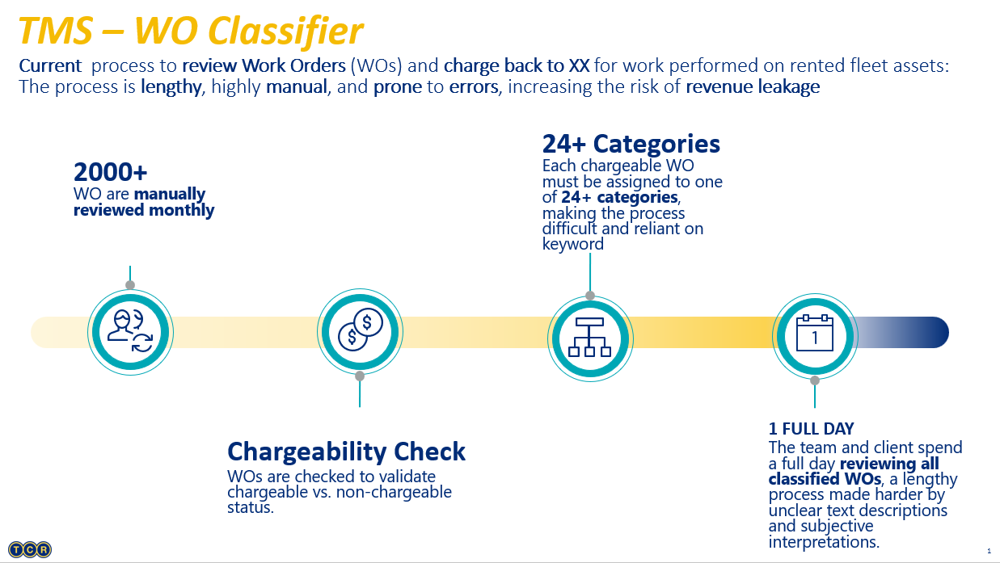
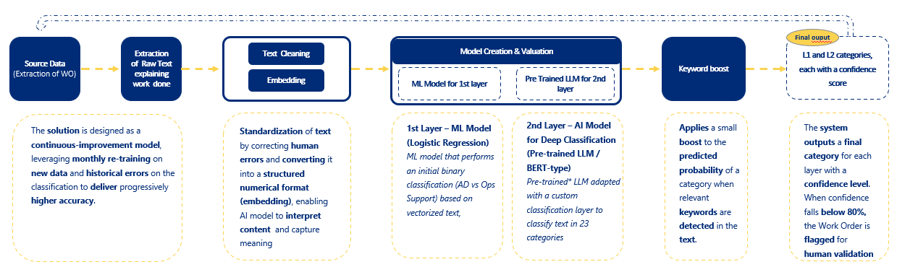

The Challenge
What needed
fixing.
TCR Group rents Ground Support Equipment (GSE) to airlines and airports worldwide. Part of its revenue comes from repair activities not covered in rental contracts — these must be correctly categorized as chargeable and billed back to the client.
The categorization process relied entirely on manual review of free-text work orders written by technicians. This was time-consuming, inconsistent, and led to revenue leakage whenever a chargeable order was incorrectly classified as non-chargeable or assigned to the wrong billing category.

Work order flow — from technician input to billing category
The Approach
How I
built it.
-
01
Text Preprocessing & Vectorization
Raw work order text was cleaned, normalized, and transformed into numerical vectors using TF-IDF — capturing word importance relative to the full dataset, enabling the model to distinguish meaningful domain-specific expressions from noise.
-
02
Layer 1 — Binary Classification
A Logistic Regression model was trained to determine whether a work order is chargeable or not. Combined with CalibratedClassifierCV to produce reliable probability estimates, this layer reached 91% accuracy — filtering the dataset before passing chargeable orders to the second layer.
-
03
Layer 2 — Fine-tuned BERT for Multi-class Classification
A pre-trained bert-base-uncased model from Hugging Face Transformers was fine-tuned on domain-specific work order data to classify chargeable text into 23 billing categories. The classification head was replaced with a custom dense layer and the model was trained end-to-end with a carefully calibrated learning rate to adapt the output layer while preserving contextual embeddings.
-
04
Keyword Boosting & Confidence Scoring
Each prediction includes a confidence score. Scores are boosted when business-defined keywords are detected — using fuzzy matching to catch misspellings common in technician-written text. Any prediction below 80% confidence is flagged for human review, ensuring quality control without blocking the pipeline.

Two-layer model architecture — binary classification feeding into multi-class BERT
Results
What it
achieved.
The model was deployed to classify historical 2025 work orders that had never been reviewed — recovering revenue from orders incorrectly labeled as non-chargeable. The local team now uses it monthly to process ~3,000 new work orders, significantly reducing manual effort.
Layer 1 reached 91% accuracy in production — consistent with validation results. Layer 2 achieved a 75% F1 Score across 23 categories, a strong result given the highly imbalanced training data where some categories had very few labeled examples. 60% of all texts were classified with confidence above 80%, requiring no human intervention.